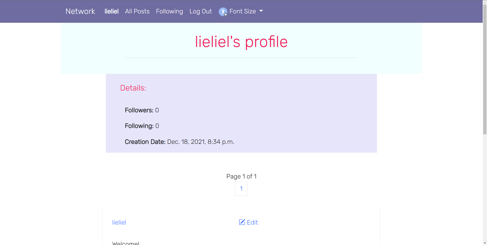

Network is a simulation of twitter
In network you can create posts for other users to see, read other users' posts, leave a like on them and follow other users
Only logged in users can like and create posts, but everyone can read the posts users already made
Above is a view of a user's profile page, showing their relevant information
Link to app